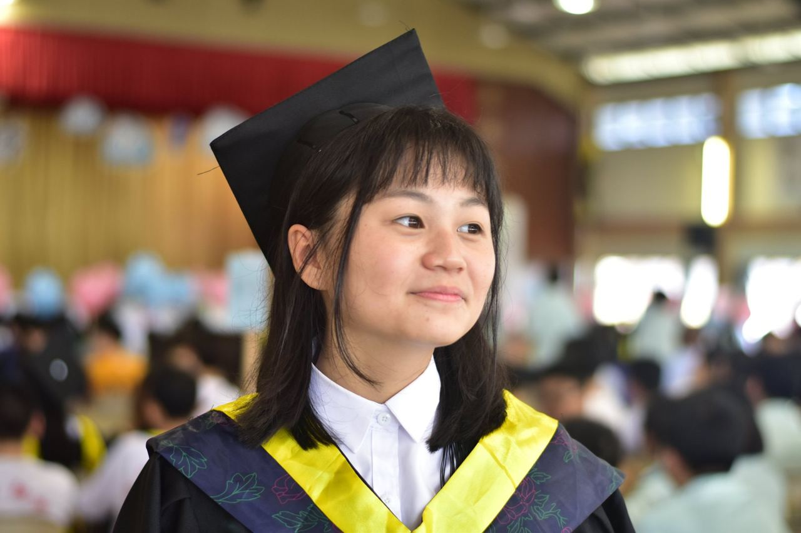
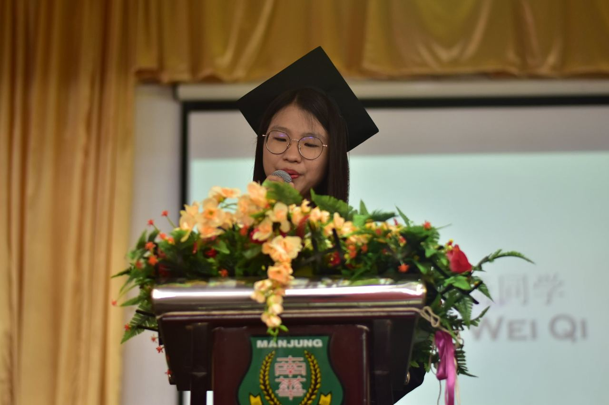
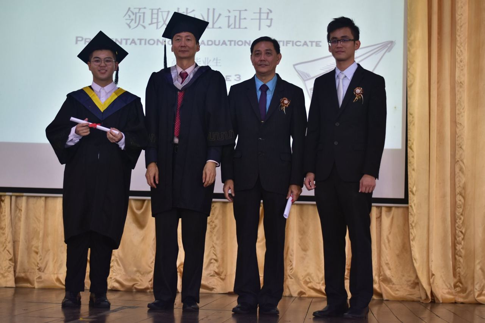
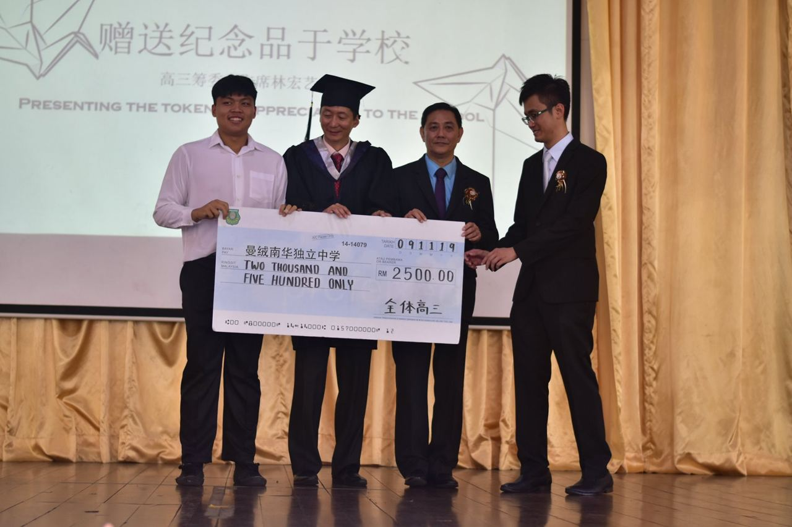
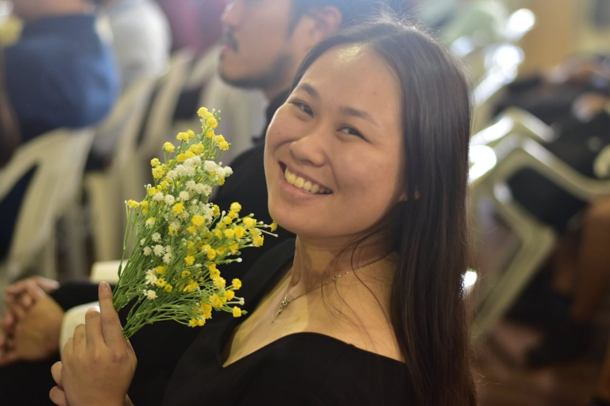

18/11/2019
18/11/2019
“今年花落颜色改，明年花开复谁在”，刘希夷的一首《代悲白头翁》带出了红颜易老，生命无常的心理。而对于今年毕业典礼的主题 “花落青春” 也带出了每一间中学一年中最开心也最为伤心的一天，毕业典礼。
老师们开心，因为学生们终于准备好展翅高飞，放眼更大的舞台；老师们伤心，毕竟看着成长六年，打着骂着宠着，每一个学生都是老师的心头肉，这一出去不知道以后还见不见得着。
学生们开心，因为他们的未来更为广阔，可以自己选择自己的生活；学生们伤心，毕竟离开一个生活六年的地方，离开自己的同班同学，好搭档，好闺蜜，不管如何始终是不舍得。
家长们开心……就不多说了，相片胜过千言万语。对孩子长大的不舍和激动是只有他们才能理解。
最后感谢万能给学校的优秀学生和老师们提供数量可观的奖学金，也代表校方感谢今年的高三毕业生回馈学校两千五百令吉作为学校的发展基金，我们总会再度相见。




